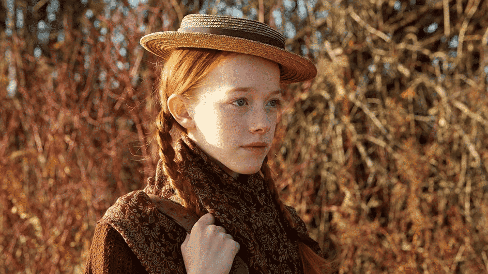

Depois de 13 anos sofrendo no sistema de assistência social, a orfã Anne é mandada para a casa de uma solteirona e seu irmão. A pequena Anne vai transfomar a vida de sua família adotiva e da cidade que lhe abrigou, lutando pela sua aceitação e pelo seu lugar no mundo. Sendo assim a Heroina da sua propria Historia.